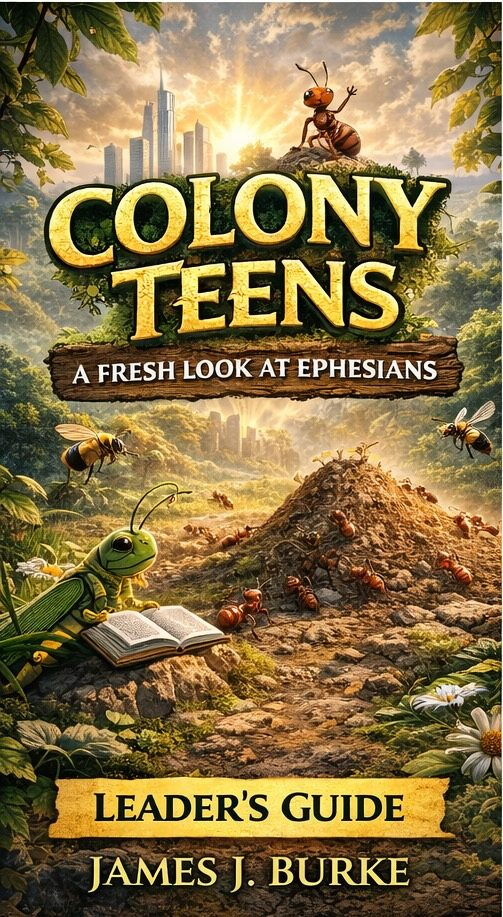

Building Fireproof Teens
1 Corinthians: The Complete 14-Session Study Set
Order the Curriculum
Available exclusively on Amazon to provide the highest quality at the lowest price for your ministry.
Order Leader's Guide Order Student WorkbooksRecommended: One Leader's Guide per teacher; one Student Workbook per student.
A Foundation for the Next Generation
Teenagers today don't need shallow entertainment; they need a foundation that won't burn. Building Fireproof Teens takes the rigorous, expository heart of the Fireproof Commentary series and translates it into a 14-session journey through 1 Corinthians.
This curriculum is designed to be "plug-and-play" for the busy youth leader or Sunday School teacher. It provides the theological depth your students deserve with the practical handles they need to live for Christ in a secular world.
The Leader's Guide
Equip your teachers with everything they need to lead a deep, engaging session:
- Detailed Teaching Tips: Guidance on how to present difficult concepts.
- Illustration Ideas: Object lessons and stories that stick.
- Memory Verse Drills: Tools to help students hide the Word in their hearts.
- Leader's Notes: Insights into the KJV text to answer tough questions.
The Student Workbook
Keep your teens focused and engaged throughout the week:
- Interactive Note-Taking: Helps students follow along during the lesson.
- Reinforcing the lesson: fun activities for every session.
- Discussion Prompts: Space to reflect on how the text applies at school and home.
- The "Finish Well" Challenge: A focus on long-term spiritual endurance.